Code Audit
Running a Manual Code Audit
| Each
time the menu item
"Audit Code" is selected, the enabled audit rules
in the
default audit rule set
will be run. This produces a audit violation result set, which is then displayed in the
Audit view. A violation result set is the result of running a
specific audit rule set on a collection of resources. The Audit
view can
manage multiple violation result sets simultaneously, but only one can
be active and visible at one time. Other
audit rule
sets, such as the pre-defined "The Elements of Java
Style" and "Effective
Java", may be run using the
"Audit Code Using..." command. Dynamically Auditing Code |
| An option is also provided to
dynamically audit code in specific
packages (specified by inclusion and exclusion patterns). When dynamic
auditing is turned on for a package, opening a class in that package will result in it
being automatically scanned for audit violations and the results added
to the Audit view (to the "Violations in Open Files" audit
violation set). Note that if the dynamic audit violation set is not
active, you would not see any dynamic audit results. The dynamic code audit facility is invaluable to catching problems as the developer is writing code, rather than after the code is written. A single naming violation, for example, might be propagated through dozens of source files before a nightly build/audit would flag the problem. Dynamic audit flags the problem as it occurs as close to the actual event as possible. The cost to fix many coding problems is often in direct proportion to the time between when the problem was created and when it was caught. Dynamic code audit is the equivalent of having a personal code reviewer sitting on your shoulder all day silently making suggestions as necessary. |
Audit rules can be locally disabled for one or more lines in a file. You may also establish project defaults that determine which files are included and excluded from the audit process and which audit rule sets are used for different packages or files.
Options are provided via a preference page to create new audit rule sets, to enable or disable individual audit rules, and to enable or disable dynamic auditing.
Audit View
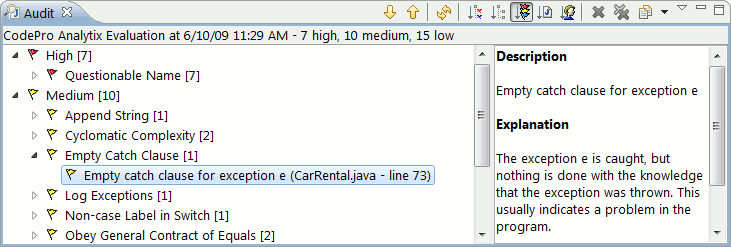
The Audit view (shown in the picture above) contains a list of the audit rule violations that resulted from running those audit rules against the target elements. The name of each audit rule with a violation is shown at the root of the tree. Expanding any audit rule will show the list of individual violations (with their locations). Selected violations can be removed from the set and copied to the clipboard.
Each audit violation is shown with an icon indicating its severity level:
High severity
Medium severity
Low severity
The audit tree can also be configured to show the audit violations
grouped by
audit rule,
category,
severity,  resource or
author.
resource or
author.
Double clicking on any violation will open up the corresponding compilation unit and position it at the specific violation. Annotations for each violation are shown in the Java Editor.
Audit rules can be locally disabled for one or more lines in a file.
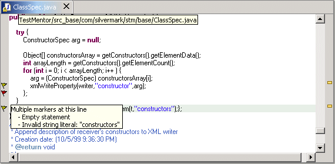
Audit View Context Menu
Right-clicking on any violation, rule or resource with show the following menu:
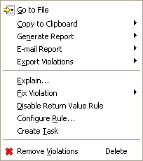
The "Go to File" command will open up the corresponding compilation unit and position it at the specific violation.
The "Copy to Clipboard" item will allow you to capture the currently selected violations on the clipboard so that they can be pasted into e-mail messages, text documents, HTML documents, XML documents or even a spreadsheet application.
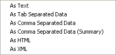
| The "Generate Report" item will allow you to save the currently visible
results to an HTML report. The results may be grouped by audit rule,
category (audit rule group), severity, resource or author. 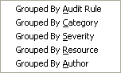 |
A sample HTML report is shown
below. The audit violations will be listed grouped by
audit rule,
category,
severity or  resource depending on the choice made in the audit view. Clicking on the links in the Details column of the report will jump to the violations and show them in context in teh actual source.
resource depending on the choice made in the audit view. Clicking on the links in the Details column of the report will jump to the violations and show them in context in teh actual source.
The "E-mail Report" item will allow you to e-mail the currently visible results as an HTML report. The results may be grouped by audit rule, category (audit rule group), severity, resource or author.
The "Export Violations" item allows you to save the currently visible results directly to a text file in simple text, tab separated, comma separated (full report or summary), HTML or XML format (holding down the Ctrl key will save only the violations that you have selected).
A sample XML report is shown below.
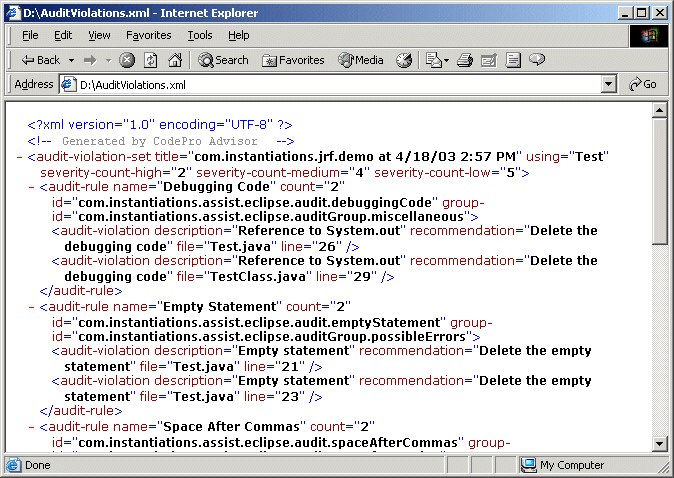
The "Explain" command will show an explanation of what caused the selected audit violation or a description of the selected audit rule. If their are any recommendations for fixing the problem, they will be shown as well.
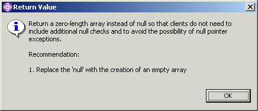
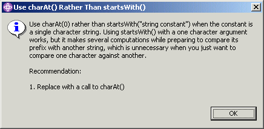
The "Fix Violation" command will list any specific resolutions supplied by the audit facility. Clicking on a fix will cause it to be applied the selected violations. In some cases, ignoring the violation is the correct course of action, so several options for locally disabling the rule are also supplied. Note that some resolutions may be applied to multiple violations at one time while other may only be applied to a single violation at a time.
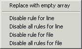
The "Disable Rule" command will disable the selected audit rules in the current audit set. Alternately, audit rules can be locally disabled for one or more lines in a file. The "Configure Rule" command will open up a dialog allowing you to configure the selected audit rule.
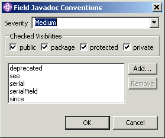
The "Create Task" command will create tasks out of any selected audit violations.
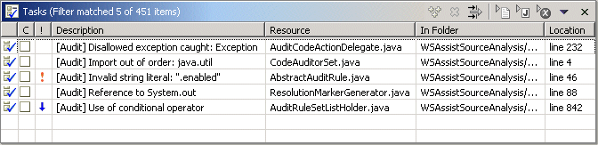
The "Remove Violations" command will remove the selected audit violations from the currently visible set of results.
Refresh Button
Clicking on the Refresh button will cause the current set of results to be refreshed in case any of the violations may have changed or been fixed or any new violations created.
 Filter Button
Filter Button
Clicking on the Filter button will open a dialog where you can select which violation severities should be visible in the audit view.
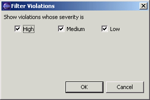
 Remove Current Violation Set Button
Remove Current Violation Set Button
Clicking on the Remove Current Violation Set button will cause the currently visible set of results to be discarded. This operation cannot be undone. If the current violation set is still in process, this button will stop the process and discard any violations that have been found.
 Remove All Violation Sets Button
Remove All Violation Sets Button
Clicking on the Remove All Violation Sets button will cause all of the sets of results to be discarded. This operation cannot be undone. If any of the current violation sets are still in process, this button will stop them and discard any violations that have been found.
Previous Violation Set Button
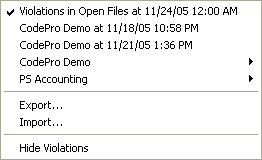
Clicking on the arrow beside the Previous Violation Set button will cause a menu containing the most recently run audit violation results to be displayed. If there are additional sets of audit results available but not included on the menu, a menu item labeled "Other" will also be on the menu. Selecting one of the result sets from the list will make the audit view show the content of the selected result set.
Either clicking on the history icon for the Previous Violation Set button, or selecting "Other" from the drop-down menu, will cause a dialog to open in which you can select the result set that you would like to view. This dialog contains a complete list of all available result sets.
When dynamic auditing is in effect, a special "Violations in Open Files" audit set will be included in the list. If the "Violations in Open Files" violation set is not active, you would not see any dynamic audit results.
Result sets are not persisted beyond a single execution of the workbench.
The "Export" option can be used to export the currently selected result set to an XML file that can be loaded in later.
The "Import" option can be used to import a result set from an XML file.
The "Hide Violations" option hides the current result set so that no flags are shown in the editors.
Show Explanation Pane Menu Item
Selecting the Show Explanation Pane menu item toggles the explanation pane on and off. When the explanation pane is visible, clicking on an audit rule or violation shows a detailed description of that item.
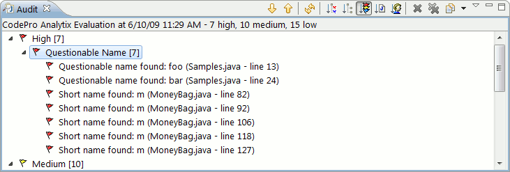
Adding New Audit Rules
The Code Audit facility defines an Eclipse extension point for adding new audit rules. See:
<CODEPRO>\eclipse\plugins\com.instantiations.assist.eclipse.analysis_X.X.X\plugin.xml
All of CodePro's audit rules are defined using this extension point.